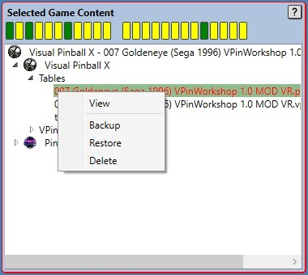
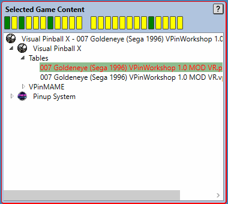

Selected Game Content Panel
Virtual Pinball Backup Manager - managing your backups, one game at a time
Virtual Pinball Backup Manager - managing your backups, one game at a time
The Selected Game Content panel provides view of game files and related content that make up a game and its settings.
The displayed information allows users to see what values have been found (when viewing current game content) or what values have been stored in the backup file (when viewing backup game content).
This content includes:

The source of information viewed in this panel is determined by the selections made in the Selected Game Display Control Panel.
There are two components that make up this panel, these are listed here and described in further detail below.
The Quick View Status Strip is shown as a strip of traffic light coloured rectangles across the top of the Selected Game Content
panel.This status strip provides a very quick to view indication of the presence or not of key game files. The makeup of the status panels shown in this strip will vary by emulator and is driven by emulator configuration. The colour of each status panel in the strip provides an indication of the game files status, the colours are:
Hovering the mouse over a status panel will provide a description of the file it represents, and for files that were found, will provide the file name for quick reference.
For files that were found a single click will expand the tree view below to navigate to the file that has been clicked on.
The Tree View is the large "Windows Explorer" like control that dominates the Selected Game Content panel.
The Tree View provides a complete tree-view representation of all content found for the game. Depending in what game content has been found, the tree-view may have 3 base nodes representing:
Expanding the tree and navigating to a file item will show the full path to the file on either the file system (when Current is selected in the Selected Game Display Control Panel) or within the backup file. Double clicking on a file entry will attempt to open the file using the default Windows application associated with the file.
Contents of the registry node (if present) provides a quick way of viewing current registry settings for the game.
The Selected Game Content panel will highlight when there are differences identified between the system and backup by highlighting the panels border in an error color. Additionally the files for which differences exist will use colour coding to help to identify the type of difference detected. These files will also trigger right context menu options to allow the differences to be corrected. Using this context menu can save the need to perform another full game backup or restore.
The differences that may occur are:
In the case where it is content in the VPReg.stg file corresponding to the selected game that differs, the context menu options will appear on the VPReg.stg file itself rather than individual content.
The image below shows a case where the games POV file has differences between the backup and the system and the backup content is being viewed.
If differences were found in either the Selected Game Filter Variables or the Selected Game Custom Filters panels, then the option to update files with differences is removed from the Current Game Content panel for all files otherthan the game file itself. This is because the values of filter variables and custom filters influences the file content displayed in the Current Game Content panel. As a result, these differences must be fixed first. This case is shown below.
